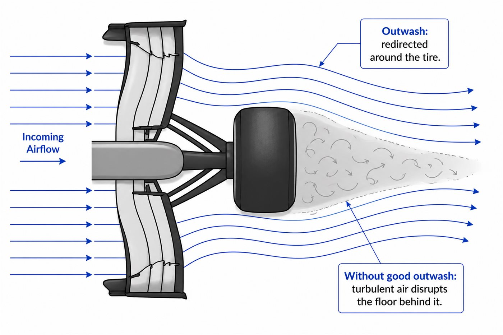
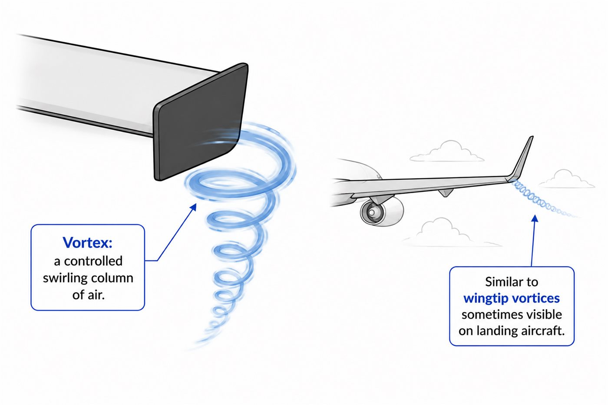
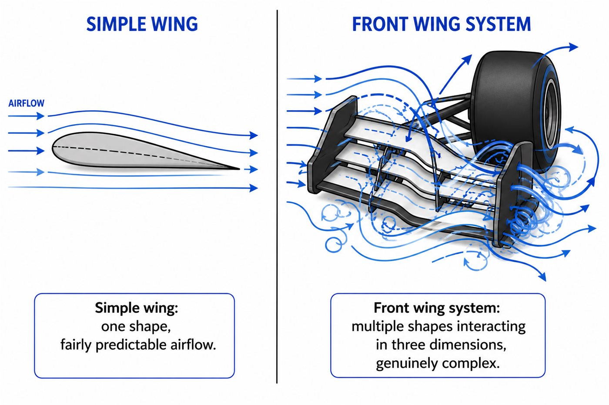

01 - HONEST NOTE
Why this lesson is taught differently
A front wing is not just one simple wing in clean air. It interacts with tyres, floor flow, endplates and vortices in three dimensions.
A simple formula-based playground would look cool but would not be honest. Real teams use CFD and wind tunnels for this problem. So here we build strong conceptual understanding instead of pretending to simulate it.
02 - TWO JOBS
The front wing starts the whole aero story
The front wing is the first part of the car to meet clean air. Its first job is to create front downforce. Its second job is to send useful air toward the rest of the car.
03 - OUTWASH
Outwash means pushing air around the front tyre
Open-wheel tyres create a messy turbulent wake. The front wing can redirect some air outward, around the tyre, helping cleaner air reach the floor and body behind it.

Front wing = create downforce + prepare the air for the rest of the car.
04 - VORTICES
Controlled swirling air can be useful
A vortex is a rotating column of air. Usually we think of turbulence as wasteful, but a controlled vortex can act like a tool, helping guide airflow where the designer wants it to go.

05 - 3D SHAPE
Rotate the front wing assembly
Look at the flaps and end sections. This is why a front wing is not just one airfoil slice; it is a three-dimensional airflow machine.
Your browser cannot display the interactive model. The diagrams still work normally.
Model credit: F1 2025 Front Wing by Abu Saif, licensed under CC BY 4.0.
06 - WHY COMPLEX
Why CFD and wind tunnels matter here
The wing elements, rotating tyre and car floor all influence each other at the same time. That is why front wings are one of the most studied and regulated parts of modern F1 aerodynamics.

GO DEEPER
Books worth opening
Race Car Aerodynamics - Joseph KatzFront wings, tire interactions and motorsport aero fundamentals.
Competition Car Aerodynamics - Simon McBeathFront-of-car airflow management for serious learners.
Public race-team explainersUseful for seeing real front wing development and rule changes.
Finished this lesson? Mark it as complete to track your progress.